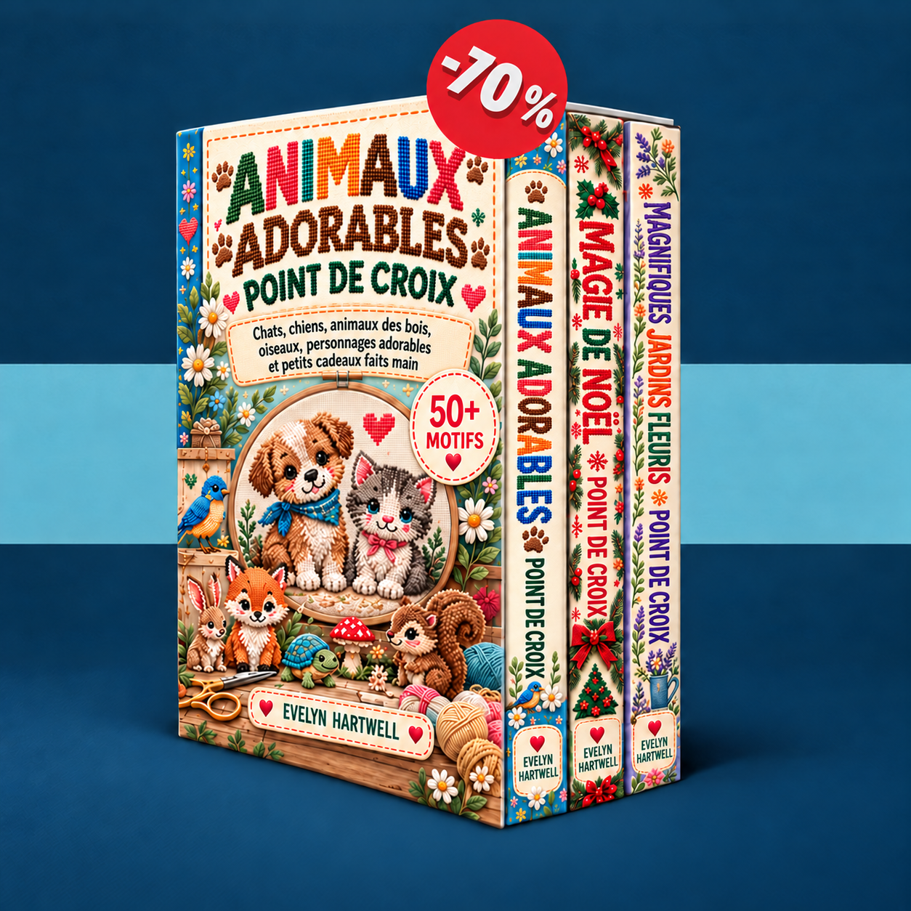

Choisissez un petit motif, apprenez à lire sa grille et brodez votre premier ouvrage étape par étape.
Chargement de vos modèles…
Activez JavaScript pour utiliser l’espace membre ou ouvrez les livres directement avec les liens ci-dessous.
Envoyer un e-mail